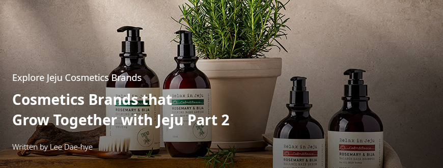
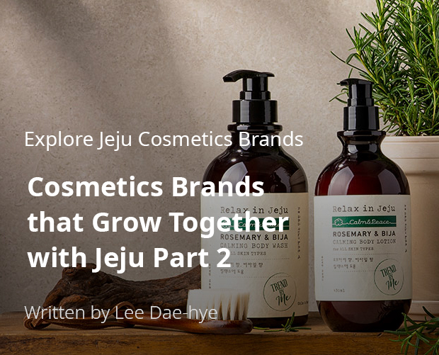
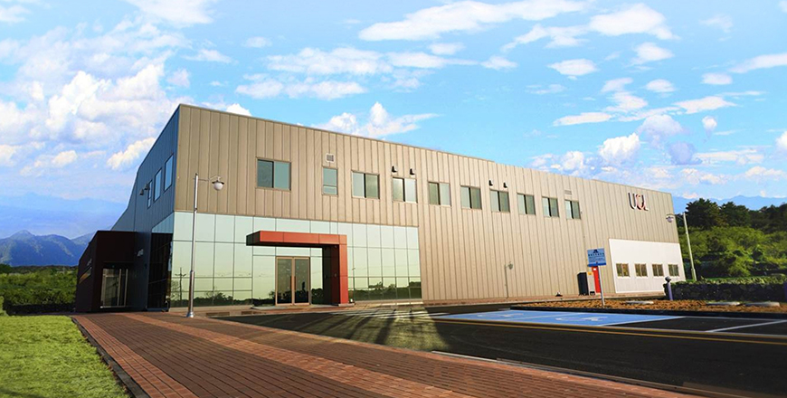
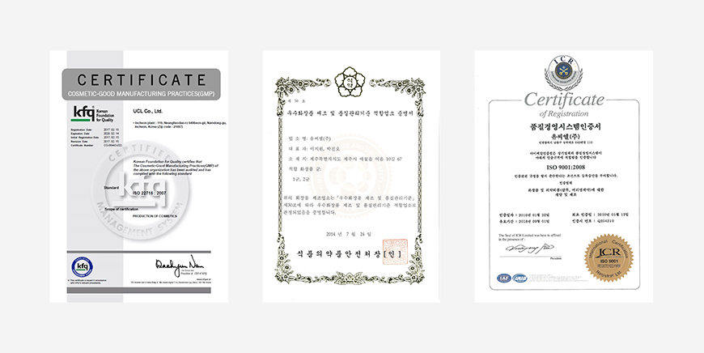
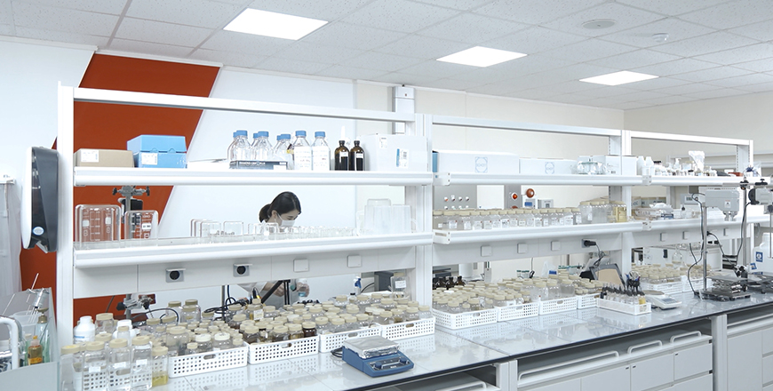

기획취재콘텐츠
- Home
- 제주라이프
- 기획취재콘텐츠
Cosmetics Brands that Grow Together with Jeju Part 2새로운 글



UCL makes a foundation for the cosmetics industry in Jeju
UCL, one of Korea’s leading cosmetics OEM and ODM companies, started as a cosmetics ingredient company in 1980. UCL constructed a Cosmetics Good Manufacturing Practices (CGMP) factory in Namdong Industrial Complex in Incheon in 1995, expanding its business as part of the first generation of cosmetics OEM and ODM companies.
UCL knew that Jeju was valuable as an optimal place for a cosmetics ingredient business because of its beautiful nature and various biological resources. UCL established a Jeju branch inside the central research institute at Jeju Technopark in 2011. It received a CGMP certification and opened factories in Eoeum-ri Aewol-eup Jeju-si, where over 30 million products are made every year. UCL’s Jeju factory is the only CGMP certified factory among private cosmetics companies in Jeju.

- UCL Jeju factories ⓒUCL -

- ISO certification (left), CGMP Jeju certificate (middle), Quality management system certificate (right) ⓒUCL -
UCL’s Jeju Research Institute is specialized in studying and developing hypoallergenic and high-functional natural products, such as natural, organic, and vegan cosmetics. Researchers use Jeju echinacea, green tea, aloe, broad-leaf bamboo, horse oil, gulfweed, sea trumpet, sea mustard, and other terrestrial and marine plants to develop and produce natural cosmetics ingredients. UCL has over twenty patents for cosmetics compositions, such as basalt powder composition, echinacea extract, centella asiatica extract, and camellia oil composition.
UCL discovers sources available only on Jeju, and that have better effects as they are grown on Jeju, to apply to various cosmetics formulation. Like it’s ingredients, Jeju’s story is also gaining attention. Storytelling to grasp the hearts of consumers is important in cosmetics branding. It is important to tell the special stories of the nature embedded in ‘Made in Jeju cosmetics’ to the world and spread this value in order to survive in the global market.
In 2007, UCL became the first Korean company to adopt the Merchandising and ODM (M-ODM) method. M-ODM adds marketing support to the original ODM procedure. To create one cosmetics product, UCL offers an all-in-one solution from finding ingredients, developing products, creating unique stories, planning concepts, and marketing. M-ODM brand development consists of using advanced technologies and branding to move customers’ hearts, and increasing the added value of cosmetics manufacturers.

- UCL cosmetics research institute ⓒUCL -
As of March 2020, UCL produced around 150 products that are certified with the Jeju Cosmetic Cert (JCC). UCL collaborates with a number of leading cosmetics brands to develop ingredients and make quality products in Jeju. These include LG Household & Health Care’s Beyond Phyto Moisture line using Jeju grains and camellia oil extract, Uniquemi’s premium masks using volcanic clusters, and CJ Olive Young Shingnulnara’s Jeju Sparkling Water Cleansing line that includes carbonated water and Jeju fresh complex (lemon, cactus, camellia, canola honey).
- “Relax in Jeju” hair and body product brand using Jeju rosemary and bija leaf extracts ⓒUCL -
UCL also has its own cosmetics brand lines using ingredients from Jeju. Accoje, a brand based on Jeju’s nature, has seven basic and functional cosmetics lines, including whitening and anti-aging products, which utilize ingredients of Jeju such as black radish, echinacea, and seaweed. Products containing differentiated stories about abundant biological resources have been getting positive responses not only from tourists to Jeju and domestic consumers, but also from consumers in other markets like Vietnam and Thailand. The company also launched “Relax in Jeju,” a hair and body product brand using essential oil extracted from Jeju rosemary and bija leaves. Riding the trend of the home spa, it has been expanding its presence as a premium home spa brand.